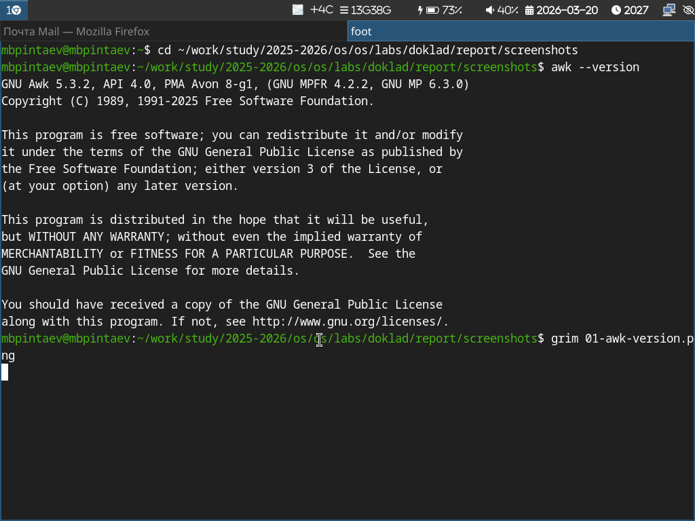
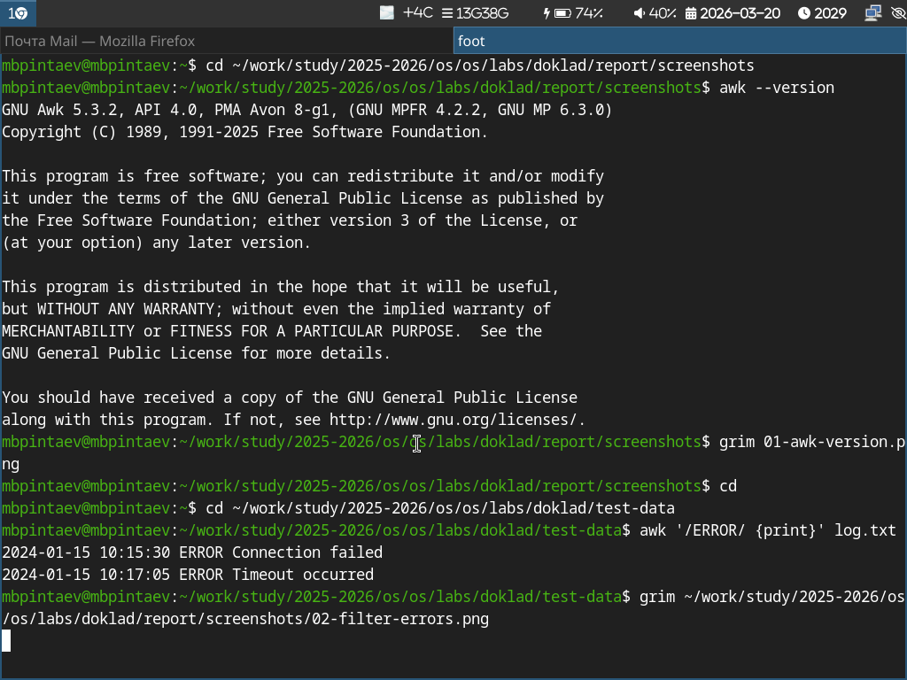
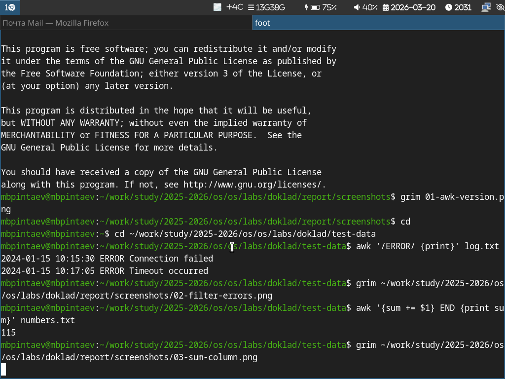
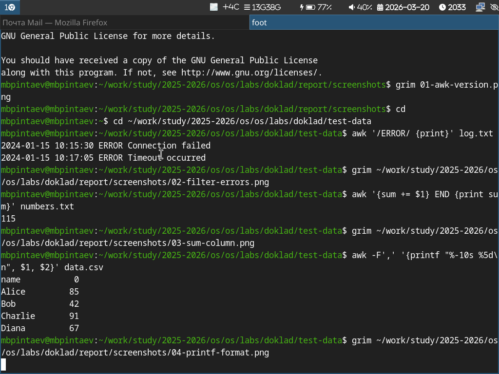
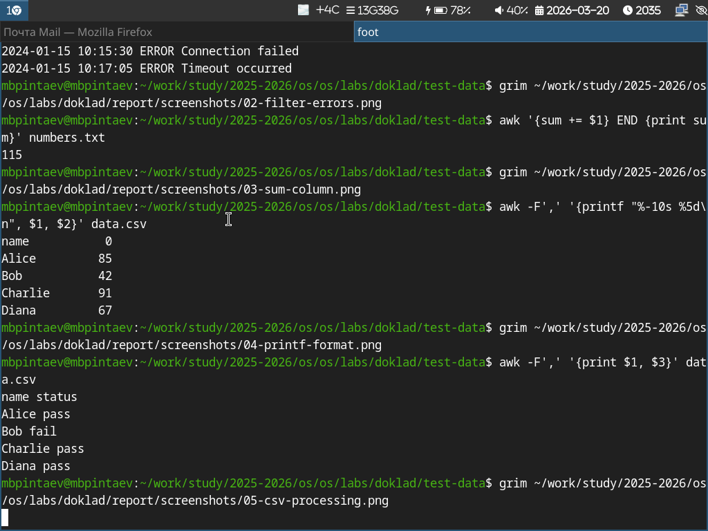
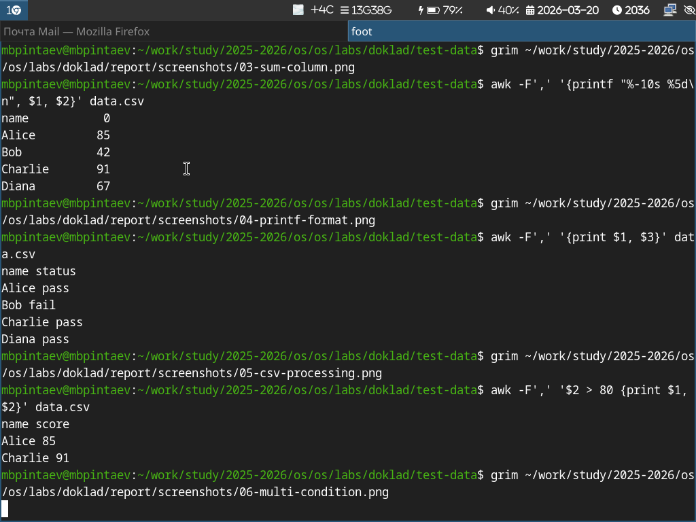

awk — мощный и эффективный инструмент для этих
задачЦель: Изучить возможности утилиты awk
для обработки текстовых файлов.
Задачи: 1. Рассмотреть синтаксис и основные
конструкции awk 2. Разработать практические примеры
обработки данных 3. Продемонстрировать эффективность
awk

awk 'условие {действие}' файл$1, $2, … — доступ к полям$0 — вся строка целикомNR — номер строкиNF — количество полейВывод только строк, содержащих ошибку:

Пример 2. Суммирование данных Подсчёт суммы чисел в первом столбце:

Пример 3. Форматированный вывод Вывод с выравниванием:

Пример 4. Обработка CSV Использование разделителя-запятой:

Пример 5. Сложные условия Выбор строк по условию:

Анализ эффективности Преимущества awk Скорость: потоковая обработка, не требует загрузки всего файла в память Простота: компактный синтаксис для распространённых задач Гибкость: легко встраивается в конвейеры команд
Заключение Выводы awk — мощный инструмент для обработки текстовых данных Позволяет решать широкий круг задач: фильтрация, суммирование, форматирование Значительно повышает эффективность работы с текстовыми файлами
Перспективы Изучение встроенных функций awk Использование в сценариях системного администрирования Интеграция с grep, sed, sort